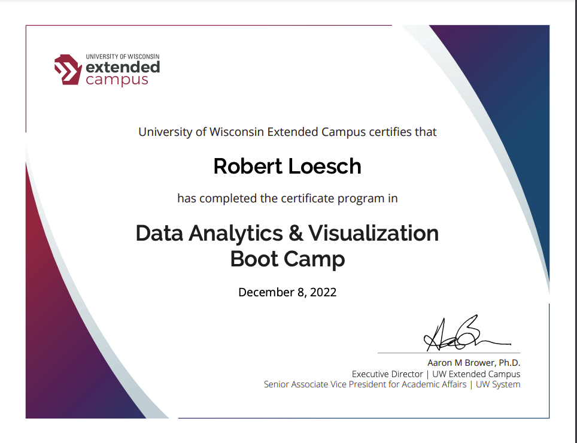

More about Me
My name is Robert Loesch and this is my Portfolio webpage.
Thank you for visiting!
I am a cloud and hybrid technology thought leader and trusted customer advocate with 20+ years experience as a Technical Sales Engineer, Architect, Project Manager, and Developer.
I have a passion for continued knowledge acquisition and growth and love to learn by applying my skills hands on.
I have a master’s degree in Management Information Systems and MBA degree.
Technologies I use:
Python, Go, R, SQL, NoSQL, HTML5, CSS3, Git, Bootstrap, JavaScript, JSON, Plotly, D3, Tableau, PySpark, Google Cloud, Red Hat Openshift, Kubernetes
Download my Resume
My Certifications




Recent Data & Analytics Projects
These are just a few of the projects I have created during my Data & Analytics training.
NFL Big Data Bowl
The objective of this project is to analyze the Performance of Linemen on pass plays.
Code Live Demoe PresentationMapping Earthquakes
The objective of this project is to gather earthquake GeoJSON data from the USGS API, create and explore interactive maps of earthquakes around the world.
CodeNeural Network Charity Analysis
This project uses TensorFlow and deep learning neural networks to analyze and classify the success of charitable donations.
ML Concepts: Tensorflow Neural Networks and Deep Learning Models
Languages: Python, Jupyter Notebooks
Libraries: pandas, sklearn, tensorflow
UFOs
This project focuses on building a dynamic webpage that accepts user inputs and adjusts accordingly to display information about UFO sightings.
In order to perform their analysis, users will be able to filter the UFO sightings
table based on multiple criteria such as the event date, city, state, country and shape.
Cryptocurrencies
This project uses unsupervised machine learning, PCA algorithm, and K-Means clustering to analyze and classify a database of cryptocurrencies.
CodePyBer Analysis
Analyze and visualize PyBer 2019 ride-sharing data using Python, Pandas and Matplotlib, to help the company improve access to ride-sharing services and determine affordability for underserved neighborhoods.
CodeMechaCar Statistical Analysis
R programming language, statistics and hypothesis testing to analyze a series of datasets from the automotive industry.
CodeAmazon Vine Analysis
This project analyzes Amazon Vine program and determines if there is a bias toward favorable reviews from Vine members. The analysis uses PySpark to perform the ETL process to extract the dataset, transform the data, connect to an AWS RDS instance, load the transformed data into pgAdmin and calculate different metrics.
CodeCredit Risk Analysis
This project builds and evaluates several machine learning algorithms to predict credit risk.
Code